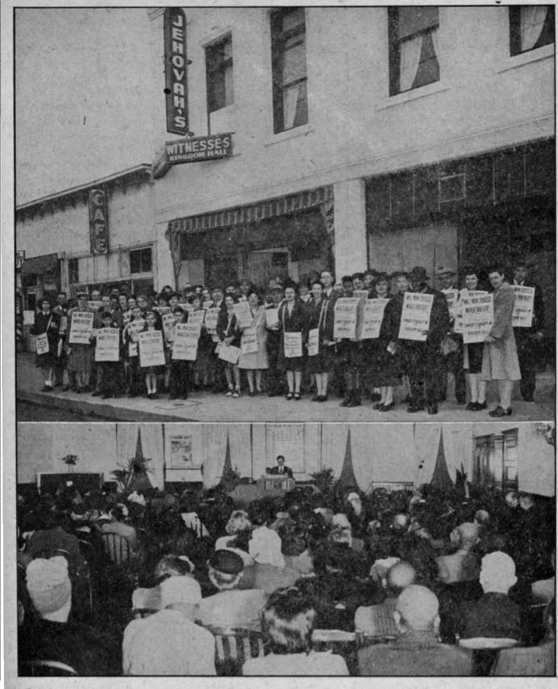

The Wise Horse and the Naughty Cow 8
Does Italy Need More Religion?
Public Ownership of Public Utilities
The Pope Should Bo Silent About Germany 14
“Thy Word Is Truth”
A Resurrection of the Fleshly Body?
- Street Preaching in Louisville
“Not One of Jehovah’s witnesses”
Who Merits Catholic Excommunication?
“Excommunication” of Lincoln '
War Criminals Receive Communion «
The Consequence of Right Training
Releasing the Power of the Atom
Published every other Wednesday by
WATCHTOWER BIBLE AND TRACT SOCIETY, INC.
117 Adams St., Brooklyn 1, N. Y., U. S. A.
OFFICERS
President N. H. Knorr
Secretary W. H. Van Amburgh
Editor Clayton J. Woodworth
Five Cents a Copy
|1 a year In the United States $1.25 to Canada and all other countries
NOTICE TO SUBSCRIBERS
Remittances: For your own safety, remit by postal note or by postal or express money order or by bank draft. When coin or currency Is lost in the ordinary mails, there Is no redraw. Remittances from countries other than those named below may be made to the Brooklyn office, but only by International postal money order.
Receipt of a new or renewal subscription will be acknowledged only when requested. Notice of Expirstlon Is sent with the journal one month before subscription expires. Please renew promptly to avoid loss of copies. Send change of address direct to us rather than to the post office. Your request should reach us at least three weeks before the date of issue with which it is to take effect. Send your old as well as the new address. Copies will not be forwarded by the post office to your new address unless extra postage Is provided by you.
Published also in German, Greek, Portuguese, Spanish and Ukrainian,
OFFICES FOR OTHER COUNTRIES
Australia 7 Beresford Rd., Strathfield, N. S. W.
Canada 40 Irwin Ave., Toronto 5. Ontario
England* 24 Craven Terrace, London, W. 3
India 127 Love Lane. Bombay 27
Newfoundland P. O. Box 521. St. John's
New Zealand 177 Daniel) St.. Wellington. S. 1
Philippine Islands 1219-B Oroquieta St.. Manila South Africa 623 Boston House, Cape Town
Entered as second-class matter at Brooklyn. N. Y..
under the Act of March 2, 1179.
In Brief
Two Hundred Poisoned by Aluminum
♦ On Saturday, August 4, 1945, about 200 employees and members of their families of the Central Falls Manufacturing company, Burlington Mills branch, Central Falls, North Carolina, were poisoned at a barbecue because the food was cooked and brought to them in aluminum vessels. The account explains the poisonings, which sent over 40 persons to the hospital, and tells how it all happened in this paragraph:
The barbecue, made by two reputable Lexington men last Friday and returned here Saturday while hot, was brought in aluminum vessels, as was the slaw, plant officials said.
Five days went by. In the meantime nobody learned anything, though it was plain as daylight, and the same results could be obtained by doing the same thing anywhere at any time. Then came this usual alibi: ,
No organisms of the food poisoning group were to be found. On the basis of the analysis report, however, the health officer said “perhaps we didn’t get a fair specimen”. Dr. Sumner said that state meat officials also checked the barbecue stand at Lexington, where the meat was prepared, and found sanitary conditions satisfactory.
The American Medical Association has from long ago taken its stand that aluminum cooking utensils are all right to use, when, as a matter of fact, they are killing the American people with cancer and other troubles which they directly cause. You can prove this. Anybody can prove it. Cook meat of any kind in aluminum utensils, let it stand in the same utensils Jwenty-four hours, as was done in the case above; then feed it to your friends and telephone for the doctors to come and help you take care of them. The doctors will come and solemnly look for what they call “spores”, or anything other than aluminum utensils.
“And in His name shall the nations hope.”—Matthew 12:21, A.S. V.
Volume XXVII Brooklyn, N.Y. Wednesday, January 30, 1946 Number 688
Church and State in Britain
JUST what function does a church serve when it is hooked up with one of those kingdoms or empires that was shown Jesus when the Devil took Him up into “an high mountain” in a moment of timet It will be recollected that Jesus, remembering His Father’s promise to make Him King of the world, refused even to take over the Roman empire, which was all ready at His hand.
So let’s make a little study of the union of church and state in Britain. They may have all the 256 sects which are now doing busine8s, in the United States, but they have only one real church for the aristocracy in Britain, and,that is the Church of England. Though, to be sure, when the king travels into Scotland, his religion is changed for him at the border and he becomes a full-fledged Presbyterian until he gets back to the border line again, then he changes over to ~his own “church”. You have heard people say, “I have my own church,” haven’t you? Well, that’s the way the king feels when he gets back to England.
On May 12, 1937, King George VI knelt on a cushion, placed his right hand on a Bible handed to him by the archbishop of Canterbury, and said, “The things which I have herebefore promised, I will perform and keep; so help me God.” Well, what are some of the results of having a church that is really hooked up with the government, and can get anything done that it wants done? Here is what one of its spokesmen, the bishop of Rochester, Dr. C. M. Chavasse, had to say on the subject:
The remarkable rise in the standard of living has not been accompanied, by any moral or religious improvement whatsoever. Instead, we are confounded by an epidemic of dis-hpnesty that corrupts every section of society, by Untruthfulness, by a laxity of morals that has claimed as many victims of venereal disease as air raids have inflicted civilian casualties, by a drift from religion.—The Church of England Newspaper.
The “Right Reverend” Ernest Neville Lovett, bishop of Salisbury, agrees fully with his fellow bishop of Rochester just quoted. He maintains that at present married women and girls in England are lacking in any sense of morality, and that there is “an absolute degradation of moral standards”. To an audience of Christian women he said: *
I hear from workers and from public authorities of little girls of 14 and 15 going astray, and married women whose husbands are away, who are heedlessly disloyal to their husbands and children. There is the woman who says: “He is away overseas; he has his bit of fun, why should not I have mine?” There are girls and boys who have given up all sense of morality and decency. Are you going to let that kind of thing grow and grow ? People say it is not as bad as it was in the last war. That is not true; it is more vigorously covered up, and there are influences that ought to know better. Our only hope is to keep up the standard of decency and morality. We should say, “These things shall not be, and we will do everything in our power to rescue these young women from this terrible degradation and lack of self-respect.”
Information from other sources shows
that marriages in Britain are down and the current birth rate is 20 percent below the replacement level. The authority of the Bible has been undermined by the bishops and the clergy, and today, as they might have anticipated, only about one-fifth as many of the people-are at-"• tending church in Britain as was the ^custom there only twenty-five years ago.
When the theologians adopted the nonsensical Darwinian theory, they cut themselves and their congregations off from God, and, blind leading blind, all are headed for the ditch of destruction. In the meantime, the real scientists, using their brains, are admitting that ' “everything points with overwhelming force to a definite event, or series of events, of creation at some time or times not extremely remote”. .
The Church of England has become very much embarrassed by the discovery that much of its $280,000 a year from the Paddington Estates in London comes from brothel-keepers. When this was brought before the London Diocesan Conference, one of the speakers said ,that the conditions were more blatant, cruel and cynical than anything he had seen in his travels through ten countries, including the United States. He did not name the other nine, but he could have named Italy, because only a little while ago the pope publicly admitted that conditions were so rotten in the “holy city” that he had to do some bemoaning to keep the ungodly newspapers from playing them up. The best thing for religion to do, when they get caught playing the sex game, is to moan publicly.
But just a suggestion here. If the Church of England is embarrassed because the bishop has to count rent money that came from prostitutes, how would it be for him to take Jesus at His word, sell all that he has and give his undivided time and attention to preaching the gospel of God’s kingdom from house to house, the same as Jesus and the apostles did T
The canon F. J. Edmond, of Derby, thinks that much of the trouble is due to the, fact that “some bishops had in the past ordained any kind of rubbish that had come along”. How shocking that he would speak that way of his “regularly ordained” fellow clergy! Maybe he never noticed at Jeremiah 1:5 that Almighty God ordained that particular prophet while he was yet unborn. That showrs, doesn’t it, that being regularly ordained by somebody equipped with a clerical collar, clerical cravat and clerical whine doesn’t mean so much after all?
The "“Very Reverend” Ernest Williajn Barnes, bishop of Birmingham, has made the novel suggestion of adopting Hitler’s idea, and simply murdering the unfit, those whom he terms “our scrub population”. Taking him at his word, how would it do to start the reform by starting with the bishops? It would be hard to imagine more mischievous, useless or expensive drones and leeches.
Convocation of Canterbury Agrees
The Upper House of Convocation of Canterl^iry is in tacit agreement with . the clergy already named in its suggestion that the phrase “resurrection of the body” should be dropped, because it only amuses the people that have had scientific training. The facts are that the expression is entirely unscriptural. There is no Scripture that speaks of the resurrection of the body. The word “resurrection” means an awakening to life. Three times in the Scriptures occurs the expression “resurrection from the dead” and eleven times occurs the expression “resurrection of the dead”. It would seem that Almighty God has done everything possible to teach that the dead are dead, and that the only chance any of them have to live again is by a resurrection of the dead ones or from the dead.
Jesus said in prayer for His disciples, “Sanctify them by thy truth; thy word is the truth” (John 17:17, Syriac; Dia-
glott confirms this). His reference was ' to the only Scriptures in- existence, the
Hebrew canon read in the synagogues every sabbath day. But the provost of the Leicester, England, cathedral, if we may believe the Leicester Mail, regards it as a tragedy that the people should look upon these Scriptures as “being in the literal sense the actual Word of God, and all of it as literal history”. The provost, being “regularly ordained”, did not like to come right out and say that Jesus Christ is a liar, but he feels that his job is at stake, and that if the people once find out that Jesus told the truth, and get to studying their Bibles, and find out • how they have been fooled, they will be sore at religion and he will have to get out of his soft job and go to work. And he would far rather lie about Christ than to get blisters and callouses on his soft hands. His idea is, “Give us less Scripture and more religion.” And all the clergy say, ‘Amen; so mote it be.’
Ao Tiaras for Halifax or Churchill
When a religionist is for running all ‘ three places, heaven, hell-below, and ’ the earth, he gets himself a tiara, i.e., a three-story crown, so that everybody ■ will know what is his job. And for fear the'common people will forget about it, and shut off the revenue, he mentions his peculiar job every time he can get into a newspaper. But Halifax and Churchill, though they may both be very good Chnrch of Englanders, are admittedly politicians. And a politician is for this thing today and another thing the next day; whichever seems advantageous.
Three months after the war broke out, Lord Halifax, British ambassador to the United States, wrote the introduction to a booklet on “The British Case” in which its author, Lord Lloyd, said:
Above all, the Italian genius has developed in the characteristic Fascist institutions a highly authoritarian regime which, however, threatens neither religion nor economic freedom, nor the security of other European nations. There is much in the Italian labor charter which we should, and do admire.
After the war got well under way Lord Halifax saw which way the wind was blowing and helped it along with the observation at Cincinnati that there is no difference between the Fascism of Germany and the militarism of the Japanese. And, of course, he was right.
Churchill is also a religious politician. He occasionally calls to see the pope, the last time being August 23, 1944, but his religion is of the political variety; it goes up and down, with his cigar; and his politics are those of the typical politician. That was a stinging remark that H. G. Wells made about him when he said, “Winston Churchill, the present would-be British fuehrer, is a person with a range of ideas limited to the adventures and opportunities of British political life.” When Churchill said that he wasn’t working on a commission to destroy the British empire he meant just what he said, qnd no fooling.
Big Church, Big Business and Big Politics were all for Fascism in 1927, and so w’as Mr. Churchill. In his own written statement, issued in Rome on January 11,1927, he said in part:
I could hot help being charmed, like so many other people have been, by Signor Mussolini’s gentle and simple bearing, and by his calm detached poise in spite of so many burdens and dangers. Secondly, anyone could see that he thought of nothing but the lasting good, as he understood it, of the Italian people, and that no lesser interest was of the slightest consequence 'to him.
If I had been an Italian I am sure that I should have been wholeheartedly with you from start to finish in your triumphant struggle against the bestial appetites and passions of Leninism. I will say a word on an international aspect of Fascism. Externally your movement has rendered a service to the whole world. Italy has shown that there is a way of fighting the subversive forces which can rally the mass of the people, properly led, to value
and to defend the honor and stability of civilized society. She has provided the necessary antidote to the Russian poison. Hereafter, no great nation will be unprovided with an ultimate means of protection against cancerous growths, and every responsible labor leader in every country ought to feel his feet • , more firmly planted in resisting leveling and treckless doctrines.
But that was in 1927, and twelve years later, when he was first lord of the admiralty, he used the American government’s very secret code to cable President Roosevelt, discussing proposed repeal of the United States neutrality act, the Johnson act, the destroyer-Atlantic-base swap, and the outlines for lend-lease legislation, and said to him, in effect, according to the columnists then in Washington:
I am half American and the natural person to work with you. It is evident we see eye to eye. Were I to become prime minister of Britain we could control the world.
Needless to add, he became prime minister, Uncle Sam did as he was expected to do, and in due time Mr. Churchill announced to the world that Mussolini was a black-hearted Italian; and so he was. And since the Italian people shot him in the presence of his mistress, hung him by the heels and spat upon his corpse, he seems a deflated hero.
There is no denying that the average American has about as much use for royalty as he has for a sore foot. When, recently, Churchill was so enthusiastic and determined about saving royalty in Italy and in Greece, Raymond Daniell, New York Times correspondent in London, said:
Whether the British or American people like it or not, there is increasing reason for the suspicion that the world has gone back to secret agreements, privately made under the cloak of military necessity, to spheres of influence and power politics . . . The average Briton’s attitude toward Americans is beginning to be like that of a girl who has swum out too far and has been dragged ashore by someone who has pulled her hair . . . Mr. Churchill has the same attitude toward royalty that many New York businessmen had toward Tammany Hall during its worst period of corruption, namely, that it is simpler to deal with a corrupt, continuing, going concern that knows the language than it is to trade with neophytes in politics who believe in principles.
Another American newsman, Walter Winchell, could not see why British tanks should surround the House of Deputies in Brussels; why Churchill should have endorsed Franco; why he should have insisted upon standing by the de- • generate house of Savoy in Italy; why he should have objected to a Greece governed by the people of Greece; or why he should have wanted Quisling governments in Palestine, Syria, Lebanon, Egypt, Iraq, and Ethiopia. For making these protests, Winchell’s column was dropped by the Hearst papers. This, of course, was a compliment to Winchell. •
It wasn’t only Americans that disliked Churchill’s backward swing. The “Very Reverend” Hewlett Johnson, dean of Canterbury, reproaching his Fascist course in Greece, made this statement:
By taking over and using concentration camps in Greece, and police organized by the Nazis, and by seizing and throwing into these camps anyone showing left-wing tendencies, he has followed perilously in the Fascist line.
Naturally, when Business sees Politics using a coffin more than once, it follows in its stead. So there need be no extravagant surprise over the fact that an Aberdeen, Scotland, managing director of a crematorium was convicted of stealing two coffins and 1,044 coffin lids, besides a quantity of coffin handles. Some of this material was sold to coffin-makers, and some went into the making of radio cabinets and other furniture. Out in an Illinois city, some years ago, relatives became suspicious, and a few hours after a body had been buried they had it disinterred and found it in the grave minus the casket, which the frugal undertaker had taken back to his place of business, so that he could sell it over again.
Others ape the politicians, who are Fascist today, Democratic .tomorrow, and Fascist the day following. In a' single year in Britain, which was once the most law-abiding country imaginable, some persons unknown smashed 25,000 windows on British railway trains, stole or removed 25,000 blinds and 20,000 window straps, slashed 13,500 seats, stole or smashed 3,500 mirrors, wrecked 13,000 luggage racks, and stole many valuable removable cushions. Plainly, this is the result of the presence of demons in the earth, doing all that they can to exasperate and confuse humanity.
In the Cornwall section a candymaker was arrested and fined for making caramels and fudge from floor sweepings. That made the gentleman angry, and when he emerged from court he threw his exhibit of sweepings into the police inspector’s car. That made the inspector mad; so he arrested the candymaker again, charged this time with wasting food. The court having already decided that sweepings are not food, the case was thrown out of court, and the candy-maker won his case.
• These bits of information from here and there in Britain help one to-appreciate the warning of Jan Smuts, premier of South Africa, when he said that after the war is over there will be a “disrupted humanity, the world milling around in suffering and destruction such as never was known before”. Does that not sound like a statement of God’s appointed King of the whole earth, wherein He spoke of “men’s hearts failing them for fear”?
Looking toward the San Francisco Conference, Anthony Eden, British foreign secretary, said that “the endeavor may well prove to be the world’s last chance”. Oddly enough, that is just what it is. The Devil’s World is al its end, and the New World, with Christ as its ruler x has come to take its place. Jehovah’s government, already begun in heaven, whence Satan has been ejected to earth, will be extended to the earth at Armageddon, at which time, by heavenly power alone, every part and parcel of Sa- . tan’s empire will be destroyed, and all the people of good will toward God will be freed, to love and serve and praise forever the One that is the Source of all their blessings.
It seems foolish to inquire if God has any rights, doesn’t it? But see what happens when He uses His divinely ordained witnesses to proclaim His coming judgments : At Leicester, England, Agnes Pauline Fisher was engaged about fifty hours per week preaching the gospel from house to house, and thus carrying her good work into more than 1,000 homes a year. Agnes (possibly because she was not dressed in a long black “Mother Hubbard”, topped with a big white collar, and with a big cross swinging around her neck) was fined £5 for * not breaking the covenant she had made with God, and accepting employment as a packer at a bakery. The newspapers described her as “a tall, attractive-looking brunette” with a “pleasant voice” and as saying “in the same polite tones” (when threatened with 26 days in prison), “I should like to state here that I couldn’t pay the fine, and I refuse to do so.”
There were reactions. Not everybody in Britain is on the side of the Devil. One of these wrote to the Leicester Mercury:
I should be grateful tor the opportunity of recording my protest against the gaoling of Miss Fisher, the girl missionary. Not only does my personal conception of manhood compel me to do so, but I believe that the majority regard such persecution of women as being both unnecessary and repugnant. I further believe that when reason returns, the residual qualities of our races will • make us all look back upon them with an abiding shame. In view of the breakdowns of moral standards, so grievously evident in our midst, I maintain that our national interests could be far better served by encouraging Christian women missionaries, rather than by gaoling them.
t The Devil is desperately trying to rep* resent that his cause is God’s cause, and that his way of doing things is the right way. Of course, the ones that come in for his special attention are the ones that are exposing him. Here is a good one from the secretary of the Hanley company of Jehovah’s witnesses, published in the Hanley Evening Sentinel of June 1, 1945, under the caption “School' Letting Refused”. It speaks for itself:
Sir,—Re the discussion at a meeting of the Stoke-on-Trent Education Committee of the refusal to grant the use of a schoolroom to the Hanley company of Jehovah’s witnesses for the purpose of giving a series of free Bible lectures, permit me to make the following observations:
The director of education stated: “There
• was nothing done at all in this office that in any way was against the regulations.” Is it not against the regulations of Mr. Carr’s office to write stating that the Education Committee were unable to give permission for the irie of the' schoolroom when the co/nmittee were unaware that an application had been made?
When interviewed, following the receipt of his letter, he agreed to our seeking a hearing before the committee. Yet a written request for this interview was dealt with in the same arbitrary manner as the application.
Mr. Carr evidently advised the committee chairman that the schools had never been let in times past to religious bodies of any kind. The schools have been used on numerous occasions by Jehovah’s witnesses, but that was in the days of a former director of education. Is none of this irregular?
On what authority does the chairman of the committee make decisions, and, when a request is made to interview this committee, refuse such request and advise that his decision cannot be altered? Why does the committee exist?
Let the chairman note the remark of a courageous and obviously freedom-loving member of his committee when he says: “It was not in the province of any official or single member of the Education Committee to turn down a request from a body of citizen^, whether one agreed with their views or not.”
We humbly seek freely to educate the people of good will in a knowledge of the simple truths of God’s Word, a work the clergy have miserably failed to accomplish.
The Wise Horse and the Naughty Cow
THE wise horse, according to Our
Dumb Animals, lived in England and took an interest in its master’s work. It seems that he was a newspaper carrier, and that this carrier had two persons who lived in different parts of the town' and paid for the paper between them, taking turns about reading it first. And, do you know, after a while the horse got on to that arrangement and would stop one week at the first address and the following week at the other.
The naughty cow, as you might know after glorifying that British horse, lived in America, and in Putney, Vermont.
Her master treated her all right, but she turned pickpocket and swiped and swallowed his wallet. The man was afraid that by the time that pocketbook jgot through the cow’s ‘four stomachs’ it would be a lot worse for wear, and he wasn’t just cure what would happen to his roll. The upshot was that bossy had to die; and, when she was explored, he got back his wad, his driver’s license, his gasoline-ratiofi book, two fishhooks, and a darning needle. What the cow intended to do‘ with those fishhooks and that darning needle will never be known. Women are such funny things I -
What Is It That Italy Needs?
JESUITRY aims at political control of the world, and Fascism was one of the attempts to accomplish that end. At one time or another some seventyeight countries or cities, including the papal states, suppressed the Jesuits, because of the massacres they have arranged and the internal conflicts they have caused. The imaginary fight be-* tween Catholicism and Communism had the simple objective of establishing political Catholicism as the government of t the world. People would be afraid of Communism and rush into Fascism. And ' they did.
Mussolini’s original Fascist program was not anti-Masonie; it was not antiLiberal ; it was not anti-Socialist. One of its clauses was “Suppression of Church Revenues”. Yet within three years after he got in power he had suppressed the Masons, made a gift of nineteen million pounds to the Vatican, boasted that he had reduced democracy to a rotten corpse, and murdered Matteotti the Socialist. He took possession of Rome, first by telephone and then in a sleeping . car. It was a typical Jesuit job, well done because there was not a particle of honesty or principle connected with it.
King Victor Emmanuel could have prevented Mussolini’s seizure of power, and he was an accessory after the fact in the murder of Matteotti. The one ambition that he has in life is to keep his title and draw his breath and his pay. Says columnist Paul Winkler:
The basis for the conflict between the Allied authorities and the Italian people resides, in the opinion of the latter, in disagreement on the principles of the monarchy. The Italians believe that the Allies, meaning the British, are still attempting to uphold the Crown, regardless of the desires of the Italian people. They recall Winston Churchill’s famous reference to England’s attachment to the mo-narchial principle in the speech in which he dwelt on the situation in Italy, and they find in that the clew of Allied policy. The general distrust of the monarchy so clearly observable in Italy is due not only to a revival of the old tradition of Italian republicanism dating from the time of Mazzini, but also to a popular tendency to consider Umberto and the king personally responsible, to a large extent, for Italy’s misfortunes.
Benito Mussolini, like Adolf Hitler, was a windjammer, arose from nothing and went to nothing, leaving behind him thousands upon thousands of Italian dead, devastated homes, starvation and shame. While he ruled Italy murder stalked the country’; unions were dissolved, their headquarters smashed and their leaders murdered. Political organizations of labor, fraternal orders of the people, co-operatives, were all destroyed. The ones put in power were the bankers, industrialists and landlords. American capitalists gave him millions to strengthen his regime. The Hearst press could not find words enough to glorify this mountebank. The pope said he was a man sent by .Providence.
Mussolini will always be despised for his rape of Ethiopia, his seizure of Albania, his 2: 00 a.m. ultimatum to Greece, his massacre of the women and children of Barcelona and Madrid, and his stab in the back of France. He was not only the inspirer of Matteotti’s murder, but was small enough and mean enough that when he had in his possession the dead man’s letters and passport, handed to him by the actual murderers, he went to the man’s widow’ and told her that he hoped sne would be able to find the assassins, and that when they were found he would punish them.
It is an established fact that when Mussolini’s guilt in connection with the Matteotti murder was brought to the attention of King Victor Emmanuel, he grew pale, trembled, pushed the papers back toward his visitors, and, rising to dismiss them, said, “I am not a judge;
these things ought not to be told to me.” In short, he was not man enough to charge his prime minister with the murder. .
- Mussolini’s wife Rachele seems to have been a faithful wife and mother. She and her hubby had at one time planned to emigrate to America, but 4 Benito got into dirty politics and went to the bad. With his mistress Claretta Petacci he was shot while trying to escape to Switzerland; youths shamelessly kicked in his dead face; both his body and Petacci’s were hung by the heels and spat upon, and then were buried in unpainted pine coffins in unmarked graves. An examination of Mussolini’s brain showed that he was neither a genius nor a maniac, and that he might have lived to a good old age.
Plainly, Italy does not need any more Jesuitical fascism. Indeed, some writers think that the twenty-two years of fascism have left a mark on every Italian up to 45 such as nothing can erase. Such writers think it has left them incapable of republican government.
Does .Italy need any more of Hitler’s brand of fascism? You know the answer. On the day when the Germans evacuated Rome, though they were careful not to take from the city anything of artistic or cultural value, yet they took 1,500 Italian Jews, made in the image and likeness of God, put them in sealed trains and sent them to the human slaughterhouses in Poland. Of the 11,000 Jewish residents of Rome it is estimated that 6,000 disappeared altogether as a result of the wholesale arrests and deportations carried out by the Germans. ,
On June 30,1945, the Associated Press carried the following from Rome, which speaks for itself:
A Milan dispatch said today 150 persons had been walled up alive by Fascists in cellars of the Royal Palace at Monza [a suburb of Milan] shortly before the liberation of northern Italy. The dispatch quoted the Gior-nale Lombardo, Allied Military Government newspaper, as saying that victims were tied in sacks and buried in previously prepared niches. Allied authorities also were reported to be dragging a lake near the villa for bodies of persons believed to have been thrown in the water with stones tied about their necks.
In the fall of 1944, when the Germans began to realize that they were in a tight £x, but were still hoping that Germany itself could hold out, much of the industrial equipment of northern Italy was dismantled and shipped to the Reich. This was a great blow to Italy, because the north contains the anti-Fascist, antimonarchist, progressive forces upon which the country as a whole depends for republican leaders.
Does Italy Need More Religion?
Many people would say yes.. They would cite tliat horrible scene in the Roman Palace of Justice, September 18, 1944, when women who professed to be Christians seized the ex-prison warden, Donato Carretta, pulled him away from soldiers who had rescued him and actually got him into a taxicab, shoved him to the middle of a bridge spanning the Tiber, threw him into the river, waded in and rowed in after him, struck him with their oars and finally held him under water until he was drowned.
Others would cite conditions in Milan throughout May, 1945, when, on several nights, more than twenty persons were killed on the streets each night.
Others would mention the awful black market conditions of the winter of 19441945; that candles were $1 each and that a box of matches cost 50c, and that it • was claimed that
All notions of morality seem to have disappeared in Italy. The people’s main concern is the next meal, and they are willing to overlook everything in order to obtain it. . . . Criminality and prostitution are gaining rapidly.
But nobody except Jehovah’s witnesses would dare tell that the real trouble with Italy is that it has not too little re-
ligion, but that it has too much; that St. Peter’s Church, where the pope holds forth, is the largest church building in the world; that the pope’s residence, with its 1,100 rooms, is the largest residence in the world; that the pope is always an Italian; that a majority of the cardinals are always Italians; and, finally, that 99.6 percent of the population of Italy’ are Roman Catholics. And, as is usual in countries that have only parochial schools, 26.3 percent of the Italian people are illiterates, unable to either read or write. The Italians are fine, hard-working people, and when they give up their religion and turn to Christianity they make excellent, industrious, intelligent citizens.
Some Items About India
THE 45 races that inhabit India are divided in that they speak 200 languages ; they are divided further in that there are 2,400 castes and tribes; and they are divided still further in that there are 700 feudatory states which enjoy a large measure of local autonomy. Some of these latter are Assam, Baluchistan, Baroda, Bengal, Chattisgagarh, Cochin, Deccan, Gujarat, Gwalior, Hyderabad, Kashmir, Madras, Mysore, Orissa. Punjab, Rajputana, Sikkim and Travancore. It is hard to generalize about India.
After listing 33 famines, 18 of which were in India, the Encyclopaedia Britannica explains:
Owing to its tropical situation and its almost entire dependence upon the monsoon rains, India is more liable than any other country in the world to crop failures, which upon occasion deepen into famine. Every year sufficient rain falls in India to secure an abundant harvest if it were evenly distributed over the whole country; but as a matter of fact the distribution is so uneven and so uncertain that every year some district suffers from insufficient rainfall. In fact, famine is, to all intents and purposes, endemic in India, and is a problem to reckon with every year in some portion of that vast area. The people depend so entirely upon agriculture, and the harvest is so entirely destroyed by a single monsoon failure, that wherever a total failure occurs the landless laborer is immediately thrown out of work, and remains out of work for the whole year. The question is thus one of lack of employment, rather than lack of
. JANUARY 30, 1046
» * food. The food is there, perhaps at a slightly enhanced price, but the unemployed laborer has no money to buy it.
Turning to the Encyclopedia Americana, this additional information is obtained :
The famine of 1125 diminished the population of Germany one-half. AU through the Middle Ages public opinion upheld the city authorities in driving out of the gates the neediest inhabitants and letting them perish. In a famine which devastated Hungary in 1505 parents who kiUed and ate their own children were not punished. . . . India has long been subject to great famines, and the government’s budget makes annual provision against such need. Under the rule of the English, the population has greatly increased, and as the majority of the people live from hand to mouth in ordinary times, the slightest failure in the rice crop causes the famine point to be immediately reached.
There are 60,000,000 people in Bengal, and in September, 1943, more than 1,000,000 hungry and destitute persons in that rich area were being fed one meal daily, and it was officially estimated that' 50 were dying daily of starvation in Calcutta (2,100,000 population), Bengal’s largest city. In October the number had risen to 200 a day, and the bodies of those who had starved to death were being taken from the streets of other Bengal cities daily. The explanation offered by the London News Chronicle man was as follows:
Here in Bengal the land is mostly in the hands of zamindars (big landlords). Normally the landlords pay their laborers partly in produce, but this year, because of fantastical- ly high prices, they have sold their grain and paid their workers in rupees—paper instead of food. The rice passed into the hands of • merchants, who waited for a further rise in 4 price and then sold to other speculators.
By the end of October some Indian statesmen had expressed the conviction that 100,000 were dying of starvation in Bengal each week. A British student enumerated causes of famine thus:
(1) Pressure of population on food supplies available"; (2) subdivision of land into too small uneconomic holdings; (3) too many middlemen who can legally claim • part of the income; (4) hand-to-mouth methods of farming; (5) deterioration and impoverishment of the land itself; (6) a large landless proletariat; (7) enemy action, harassing shipping in the Bay of Bengal; (8) extreme transportation difficulties, account of the war; (9) monetary inflation, to finance India’s war effort; (10) hoarding of foodstuffs.
The British have been given plenty of advice as to what to do about the Bengal famine. New York Labor Action wants to industrialize the people, and puts up an argument like this:
India is one of the world’s richest countries in natural resources. It has some of the largest iron ore fields in the world. It has deposits of coal, manganese, chromium, mica, copper and other metals. It contains forty-nine percent of the world’s- bauxite necessary for the manufacture of aluminum. Its potential- hydroelectric power at twenty-seven million horsepower is second only to the United States. Great stores of lumber are lodged in its vast forests. India is the world’s second-largest cotton producer and ranks with the best in tobacco and sugar production. Its resources of jute and hides and skins are immense. The natural and logical course for India would be to develop its industries, absorb millions of starving peasants into its factories, provide cheap manufactured goods for the villages and farms and begin to mechanize its agri- , cultural production.
Others that know something of the situation wanted food sent in at once, but it was explained to them that Burma used to send in 2,000,000 tons of rice a year, and would have done it in 1943, but the Japanese held the country and the food could not be sent out. Canada offered to send 100,000 tons of wheat, but shipping space was not considered available. Australia had 4,000,000 tons of surplus wheat, and this, it was thought, could not be utilized for the same' reason. Meantime the peasantry of Bengal were trying to live on a supply of food that would hardly sustain that many rats; Calcutta was overrun with hordes of starving men, women and children glad to rifle food from public garbage wagons or from any other source from which it could be obtained, such as decayed fruit or gristle and bones from a butcher shop.
The Indian Medical Service in one of its official reports stated that 41 percent of the population is poorly nourished, 20 percent very poorly nourished, and that 80,000,000 Indians are always hungry; and yet, poor misguided creatures that they are, victims of demonism, while Bengal was right in the midst of its famine sufferings, and the death toll from; starvation ran as high as 100,000 a week/ Hindus of the province burned $5,000 worth of rice, barley, wheat, copra and lard as a sacrifice to appease their gods.
In this, they did not show a bit more common sense than those worshipers of “eternal torture” or “purgatory” gods that have deceived the people of “civilized” lands into thinking that all that is wrong with the world is that it doesn’t, have even half enpugh of that kind of religion; that what is wanted is a “church” on every acre and with priests, preachers, friars, monks, nuns, bishops, archbishops, cardinals and popes falling over one another to pull the bell ropes and grab the collection baskets for the grand rush down the aisles to get the working peoples’ last coin of the realm.
Public Ownership of Public Utilities
IT IS just as true today as it ever was that the sensible thing to do with public utilities iS to have them run by the public and in the public interest. And in the long run that would be to the best interests of the investors; it would keep them from making hogs of themselves and so bringing on things that are ■worse than the remedy proposed. Nobody contends that sewers should be privately owned, and that solitary fact makes ridiculous the private ownership of telephones, electric lights, electric power, gas, and water.
The Federal Power Commission made a study of the rates charged in 3,765 American communities of 2,500 up. A little more than one-fifth of‘these own ■ their own lighting plants, while the others are served by privately-owned utilities. Labor drew off some pointed comparisons :
At Tacoma, Wash., under public ownership, the average monthly household bill for power is $1.70, while at St. Petersburg, Fla., the average monthly charge of a private utility is $6.08, or more than three times as much.
The charge of a public plant at Penn Yan, N.Y., is 64 cents for 25 kilowatt hours, while at Nantucket, Mass., the private utility’s rate is $3.94 for the same amount of energy, or more than six times as much.
The average monthly bill at Chattanooga, Knoxville, Memphis, and Nashville, all supplied with TVA power through publicly-owned companies, is 75 cents, while at Manchester, N.H., the average monthly bill is $2, or 166.7 percent more.
At Concord, Mass., one of the few New England communities which own their own plants, the average monthly bill is $3.15, while at Nantucket, Mass., the average monthly bill of the private utility is $9.91, or 214.6 percent more.
At Braintree, Mass., supplied by a public plant, the average monthly bill is $2.93, while at Plymouth, Mass., the average monthly bill of the private utility is $5.77, or practically twice as much.
The situation in California regarding ownership of utilities is very tense. The New Republic examined this in three issues in the summer of 1945. From the concluding article three paragraphs are selected which give one a fair idea of the fight that is going on to save something s for the common people:
The extent of the burden of private power upon the rate-payers of northern California is shown by a comparison with conditions under the public-ownership system of the State of Washington. If Washington’s average charge for power in 1944 were applied to the energy sold by Pacific Gas and Electric in 1944, it would result in an annual saving of $58,569,000. Or to put it in reyerse: If the average cost per kilowatt hour in the Pacific Gas and Electric service area for 1944 had been applied to the energy sold in the State of Washington tn 1944, the total revenues would have jumped from $66,464,000 to $145,940,000, an increase of $79,476,000. In view of these figures it is no wonder the Pacific Gas and Electric Company feels free to spend rate-payers’ money to fight public ownership. . ,
Private ownership of utilities is clearly an expensive luxury, and one which we shall not be able to afford much longer. Employment and successful business enterprise will depend, as never before, upon a wide distribution of purchasing power and upon a marked increase in the total peacetime national income. Private ownership of power restricts * both.
A practical example will illustrate the point. In 1939, out of a total income of $107,340,000, the Pacific Gas and Electric Company paid $32,090,000 in interest and dividends to stock and bond holders and $24,429,000 in wages to labor. In addition, $14,988,900 was charged to depreciation and $4,832,000 was added to earned surplus. These payments were, in effect, pension payments to ownership interests: they not only maintained the plant in perfect condition without cost to the stock and bond holders,
'x '
but a part of them was used to finance ex-■ pansion also. In contrast, Only $423,000 was paid as pensions to labor. These charges, of course, fall on the rate-payers as an “operating expense” and no contribution at all is made by the stock or bond holders. The earning power of labor stops completely when a laborer dies, while the income to ownership
goes on from generation to generation without the contribution of any new service on the part of the owners. Note also that in 1944, when the company’s income had risen to more than $150,000,000, an excess-profits tax of $12,680,000 was passed on to rate-payers. None of it eame out of the company’s net profit. .
The Pope Should Be Silent About Germany
TN ITS issue of June 13, 1945, the New 1 York Times carried a big story by Virginia Lee Warren entitled “Pope Says He Tried to Bar War by Axis”. Naturally, seeing his friend Hitler licked to a finish, the pope tries to get out from under, but there is so much evidence that he was heart and soul with Franco, and Franco’s military chieftains, Hitler and Mussolini, that the most prudent thing he can do, under the circumstances, is to just keep still ajjout Germany. Miss Warren’s story mentions that on March 11, 1940, von Ribbentrop told..-Pacelli that the 80,000,000 Germans just simply could not lose the war; that all would be over in a year; and that within that time Britain would be suing for
* peace. It also mentions that the pope made no reply, or at least that his reply was not recorded.
Manifestly, the only way that the pope can now’ run the world, as he and Hitler had jointly planned to do, is to run it politically. He cannot now use either of his one-time back-door friends, Roosevelt or Churchill, so he has to get help wherever he can. Here, for example, is the New’ York Sun of May 23. It has a two-column-wide double headline reading, “70-year-old German Catholic Is Made Head of Rhineland Civil Administration”. The Sun knows very well that Germany wras a Protestant nation before Hitler gained control. So why blare it all over the paper that it is a Catholic that gets this important postwar job?
The same thing is noticeable in Berlin. Under date of June 11 the Milwaukee
Journal has this to say, from the pen of Eddy Gilmore, telling what the Russians did when they took over the administration of the city which Hitler said would stand unscathed for a thousand years:
General Bezarin said about 20 churches, mostly Evangelical Lutheran, were open. “I have appointed a .Catholic priest, Father Bucholtz, to the town council,” Werner said. “He is in charge of the department of religion.”
The Russians made Werner burgo-meister of the city, and then he put a Catholic priest in charge of the religious businesses being run by the Lutherans. Does this look as if it were on the up-and-up?
It will be recalled that at the same time that Jehovah’s witnesses were being thrown into German concentration camps Cardinal Innitzer, of Vienna, did himself proud by signing a letter “Heil Hitler”. Here now is a dispatch, copyrighted by the Pittsburgh Press and the Chicago Daily News, which tells how little the liberty-lovers of Upper Austria enjoy this campaign of shoving Catholic priests into every place where they can do mischief:
Bern, May 18 — A wide split has developed between Catholic and Leftist elements in Upper Austria. The latter demand that priests who have favored Nazism since 1938 be removed from their positions, according to in- • formation reaching Allied diplomatic circles here. The controversy revolves around Theodor, Cardinal Innitzer, Germanophile archbishop of Vienna and primate of Austria.
There are repercussions in America also. At Fort Leavenworth, Kansas, seven German captives murdered a fellow prisoner whom they accused of turning traitor to Germany. Every one of the seven men was a Roman Catholic, and four of the seven thanked the officials of the disciplinary barracks for letting the priests perform certain rites over them before they were executed by hanging.
The Scriptures say, “No murderer hath eternal life abiding in him”; and therefore the so-called “last rites” are entirely wasted. These men (seven of them, shamelessly) who beat, choked and hanged their fellow prisoner, are manifestly done for all eternity. Why would God or anyone else want to see them awake from the sleep of death with their hearts full of hatred and murder?
Franco’s Fascist Regime
THE St. Theresa Weekly, in its issue of September 30, 1945, says of General Franco:
General Franco of Spain is one of the greatest leaders living today. He saved Spain from communism. He saved Spain to the Catholic Faith. He is both a good Catholic himself and has proven himself a true patriot.
Forty-two Spanish bishops declared that Franco’s war against Stalin’s agents and their dupes was a just one. Popes Pius XI and XII commended Franco.
Now as to General Franco, and what a great leader he turned out to be, let us glance away for a moment from the Catholic press to more reliable sources of information. His Fascist regime was officially outlawed from the United Nations by the Potsdam declaration of the “big three”, and all righteously disposed and liberty-loving people responded with a hearty Amen. The Spanish dictator’s frantic efforts to ward off the condemnation by reshuffling his government shortly before the Potsdam conference was a dismal failure.
Noteworthy in Franco’s annual July 17 address, before the National Council of the Falange, was his admission of the identification of his regime with the Roman Catholic Church. After condemning “liberal democracy and communism” as “the negation of everything in Spain’s national life which is Catholic, proud, intelligent” he went on to declare, according to the New York Times of July 18: To understand Spain is to understand the Catholic mind, its ethical principles, its spiritual conception.
When Franco said Spain,’ in that sentence, he meant Fascist Spain, and he admitted what few publications outside those of the Soviet Union have the courage to point out: the identification of Fascist ideology with that of the Vatican. The importance of this fact for the future of the world should be surely apparent to every intelligent American. It would be only reasonable to suppose that in outlawing Franco and his regime, public condemnation of the Roman Catholic Church should also be in order, since the Catholic Church helped his regime to power, had openly continued to support it, and is admittedly identified with it —A Detroit, Michigan, businessman.
L300,000 Lepers
♦ Leprosy is increasing in India, where it is now admitted that 1,300,000 are suffering from it, and no cure is known. This disposes of the claim, made a few years ago, that chaulmoogra oil had proved to be an efficient remedy. The Scriptures indicate that the Jews were cured of leprosy by divine intervention; and that is probably the only way in which this terrible menace to humanity can be removed.
•“John 17 17
bridge Greek manuscript is different and is reasonable in its statement. If it was the earthquake which occurred at the moment of the Lord’s death-that opened those graves of the sleeping “saints”, it seems peculiar that they should stay thus three days before coming out of their graves after Christ’s
• resurrection. The persons whose bodies are mentioned could not have been the faithful witnesses of Jehovah of preChristian centuries, who are listed and described in Hebrews, chapter 11. Why so? Because, in verses 39, 40 the writer says to his Christian readers: “And these all, having obtained a good report through faith, received not the promise: . God having provided some better thing for us [Christians], that they without us should not be made perfect.” Hence those sleeping “saints” could not have been perfected in life at the time that Jesus died nor at the time of His resurrection, because that would have been before the members of the Christian church of which Jesus is the Head had been perfected. ,
The awakened sleepers could not have been “saints” of the Christian church, t because the chqrch had not been selected by the pouring out of the holy spirit of God upoq it. Even the beginning of its acceptance by God’s begetting it of His spirit had not taken place, and it did not take place until the day of Pentecost, which was fifty days after the resurrection of Jesus from the dead, or fifty-two days after the earthquake which aecom- • panied His death.
At most, therefore, the bringing forth of the bodies of those sleeping “saints” could have been only a reviving of them, but not a resurrection. Why are we so positive on this? Because there are the Scriptures to .prove it. At I Corinthians 15:20 we read: “But now is Christ risen from the dead, and become the first-fruits of them that slept.” Hence He must be and was the first of those that slept in death to receive a resurrection from the dead to life eternal. In support ' ‘
A Resurrection of the Fleshly Body?
IS THE resurrection of the literal fleshly body with which a man, woman or child died taught in the Bible? Poor human creatures, say we, if such a religious doctrine were true, when we take into consideration the physical wrecks which this late total war has caused and which will die physical wrecks I
One of the proofs that is usually brought forward in support of the religious doctrine of the resurrection of the body (as stated also in the so-called “Apostles’ Creed”) is the text of Matthew 27:52,53. To get the connection we quote from the fiftieth verse on, as follows: “And Jesus cried again with a loud voice, and yielded up his spirit. And behold, the veil of the temple^ was rent in two from the top to the bot-' tom; and the earth did quake; and the rocks were rent; and the tombs were opened; and many bodies of the saints that had fallen asleep were raised; and coming forth out of the tombs after his resurrection they entered into the holy city and appeared unto many.” (American Standard Version) The record throughout the remainder of the Bible nowhere states that those “many bodies of the saints” were wafted off to heaven either before or after Christ Jesus ascended to heaven; so what became of those bodies? Ask your religious instructor, if you have one, to tell you.
Doubt has been cast upon the genuineness of the verses of Matthew 27: 52,53, yet they are found in the two oldest extant Greek manuscripts; but the reading of the verses in the sixth-century Cam-
of this we have also the statement at Colossians 1:18, which says concerning Christ Jesus: “And he is the head of the body, the church: who is the beginning, the firstborn from the dead; that in all things he might have the preeminence.”
Note also Acts 13:33-37: “God hath fulfilled the same [promise] unto us their children, in that he hath raised up Jesus again; as it is also written in the second psalm, Thou art my Son, this day have I begotten thee. And as concerning that he raised him up from the dead, now no more to return to corruption, he said on this wise, I will give you the sure mercies of David. Wherefore he saith also in another psalm, Thou shalt not suffer thine Holy One' to see corruption. For David, after he had served his own generation by the will of God, fell on sleep, and was laid unto his fathers, and saw corruption: but he, whom God raised again, saw no corruption.” Hence no sleeping “saints” preceded Christ Jesus in this foremost distinction of the first resurrection.
Now, do not be stunned at the forthcoming statement, but examine it from the Scriptures, namely, it was not Jesus' fleshly body that was raised to life in the resurrection, but it was Christ Jesus as a spirit creature of God that was raised from the tomb. Before exploding over this, read 1 Corinthians 15:35-38 concerning the resurrection of the church, which is Christ’s body, namely: “But some man will say, How are the dead raised up? and with what body do they come? Thou fool, that which thou sowest is not quickened, except it die: and that which thou sowest, thou sowest not that body that shall be, but bare grain, it may chance of wheat, or of some other grain: but God giveth it a body as it hath pleased him, and to every seed his own body." Then verses 44 and 50 say: “It is sown a natural body; it is raised a' spiritual body. There is a natural body, and there is a spiritual body. Now this .1 say, brethren, that flesh and blood cannot inherit the kingdom of God; neither doth corruption inherit incorruption.” Hence the need of a change from human to spirit on the part of Christ Jesus and those who are members of His church body in the resurrection of the dead. And that Christ Jesus was not raised human, but spirit, is positively stated by the inspired apostle Peter, at 1 Peter 3:18,19, which reads: “Because Christ also suffered for sins once, the righteous for the unrighteous, that he might bring us to God; being put to death in the flesh, but made alive in the spirit; in which also he went and preached unto the spirits in prison.” —Am. Stan. Ver.
That the resurrection of the dead, aside from that of Christ Jesus, would not occur until the establishment of God’s kingdom, we read at 2 Timothy 4:1, 2: “I charge thee in the sight of God, and of Christ Jesus, who shall judge the living and the dead, and by his ' appearing and his kingdom: preach the word.” (Am. Stan. Ver.) (See also 1 Thessalonians 4:13-17.) At very most, then, the raising up of any bodies of/ sleeping “saints” on the day of Jesus’ death or resurrection was just an awakening similar to that which Jesus’ beloved friend Lazarus experienced, or the daughter of the Jewish ruler Jairus, or the son of the widow of Nain, all of whom died again, later on. They could have been no more than merely aroused from the slumber of death temporarily, and for some purpose of which we have no knowledge; after which they became inanimate and their bodies corroded to the dust. But for another reasonable rendition of the verses of Matthew 27:52, 53, we close this discussion with quoting the translation of the Codex D (or Beza Cambridge) Manuscript rendering of the verses, namely:
“Tombs were laid open, and many bodies of those buried there were tossed upright. In this posture they projected from the graves and were seen by many who passed by the place on their way back to the city.”
Street Preaching in Louisville '
AVERY impressive and picturesque scene of last Sunday’s street-corner preaching still lingers in my treasure of fond memories. Not necessarily for the message, even though it was the best talk 1 I had ever heard the witness give, but 4 for the circumstances under which the talk was given.
Picture, if you can, the neighborhood: A colored neighborhood of old, unkempt, wooden-frame, one- and two-story houses, badly in need of repairs; houses fit only for poor people to live in, making up a slum district. Then the street of broken asphalt, and sidewalks paved with uneven brick, discolored, broken, crumbling brick that were very slippery when wet; clusters of trash everywhere; dented, overfilled garbage cans; cardboard boxes full of dirt of the filthiest form; and broken baskets likewise beyond use. The entire scene looked dirty and worn-out
On the western corner of West and Walnut-stood a long, two-story, out-ofdate building used as a saloon, from which came the hubbub of banging doors, wild laughter, clinking glassware, and a juke box drumming out nerveracking jazz at an ungodly volume. A steady stream of men from ajl walks of life circled and milled around the door.
Directly across the street alongside the closed-up yellow brick pawnshop a Negro preacher pranced back and forth, before a small group of rough-looking individuals, chanting at the top of his voice, Tin called to preach” and “You must be baptized and receive the Holy Ghost”.
Now, a half block down the street is where the “white man preacher” stands. He preached on the doorstep of the house bordering the alley. When it began to rain, the members of the household allowed him to stand slightly inside the door, where he continued unhindered despite the rain.
The sky overhead, a dark gray, added to the dull colors about us. That we would have rain was certain, but as to when it would come was not yet known. The warning of a few drops lighting here and there added assurance of its nearness. Perhaps this was the reason for there being such a small crowd, as two different times I counted less than a hundred persons, and we have had up to 300 listeners. Louisville has had so much rain within the last few weeks that most people were afraid to venture very far from home even at the least hint of rain.
The Louisville company servant, his hat in hand, stepped up to the doorway and announced the speaker. His words were few, merely telling the subject and the name of the witness to discuss it. Then the speaker stepped into the doorway, faced the audience, and commenced.
He had been speaking but a few minutes when it began to drizzle (a dry rain, if you can call it that) and (lo and behold, up popped fifteen umbrellas; some were plain, others boasted fancy designs. Two to four persons gathered under each one. A few raincoats also appeared and were quickly thrown up in a sort of cape for protection. It misted through the entire hour, but never hard.enough to get you very wet if you were under some makeshift shelter. Thus the Devil was once again outsmarted, and even if it did rain, No. 5 talk, “ ‘Thy Kingdom Come’ When?” went across to a few interested persons who withstood the weather. They went away greatly refreshed after hearing the promise of the nearness of the complete establishment of Jehovah’s new world.
Across the street the colored preacher was still chanting, “I’m called to preach” and “You must be baptized and receive the Holy Ghost". Those going north probably dodged a few drunks staggering around, and those going south quietly entered their cars and drove away collecting their thoughts for the coining Watchtower study.
Where to Worship God '
WHEN I was a boy I got up early on Sunday morning and ate my breakfast, and (at a threat, from my parents) hurried myself off to Sunday school. The clanging of church bells t could be heard calling “members” of various religious sects to “worship”, or rather to hear a salaried preacher expound at length upon his own private interpretation of the Scriptures, which private interpretations the apostle Peter denounced. (2 Peter 1:20,21) For centuries now religious leaders have succeeded in inducing their congregations to believe they must go to church regularly or suffer eternal torment or damnation. Many were the victims of that fear.
Time and again I’ve seen poor, hardworking farmers drive over miles of dusty roads in hot summertime by team and buggy just to hear a long-winded tirade or dissertation of vain babblings founded upon the doctrines and precepts of man, plus a scanty, misapplied batch of scriptures, warped around to fit the particular subject in discussion. Jesus, the anointed King eternal of Jehovah God’s Theocracy, said this, as recorded at Matthew 15:9: “But in vain do they worship me, teaching for doctrines the commandments of men.”
Religious leaders always did and still do believe in beautification of church buildings. Stained-glass windows, a pipe organ, carpet strips down the aisles, vaulted ceilings and an impressive altar please their fancies. AU this is supposed to help members to feel reverent and sanctimonious, and quite often it is a fine inducement to sound sleep, which is condoned once the collection plate has been passed.
In Acts 17: 24, 25 you’ll find that God has no need of temples built by hands; neither does He dweU therein. True, Jehovah did command the Israelites to build the tabernacle, but, mind you, He commanded every detail of it for a purpose, The sole purpose for this tabernacle was to bring the tribes into a united obedience under all laws and ordinances commanded by the Almighty. The tabernacle and worship within it pictured to those Israelites something greater to come, namely, the Theocratic Kingdom and the coming King, Christ Jesus.
I was a steady churchgoer from my cradle days till well into manhood. Regularly each Sunday I shined my shoes and hurried to church so I could sing in the choir and Wear a nice white surplice over a long, somber black skirt. But all through those years I thought something was amiss. I just wasn’t learning the truth of the Bible. I’ve heard many long-winded sermons. I’ve heard high-flown oratory about some “fine” citizen of the town whom the minister was boosting for mayor. Always, of course, the sermon was interspersed with scriptures twisted to fit the occasion.
The greatest event in my life was the day when one of Jehovah’s witnesses knocked at my door and brought me the true, life-giving message that Jesus said would make you free. (John 8:32) It was the reward of a long, diligent search.
Today Jehovah’s witnesses in every land are bringing the message of God’s kingdom to people wherever they are, even to the stock ranchers who dwrell far out on the plains. They’follow the example set by Christ Jesus, as did the apostles.
At John 4:23, 24 are the recorded words of Jesus, who said that Jehovah God must be' worshiped in spirit and in truth. So the proper place to begin worship is wherever you can find a comfortable place to sit, whether it be an easy chair or an apple box, and there study the Bible. Then, having studied the Bible and knowing the truth, you go and tell somebody else about it. For the sole purpose of inducing and aiding in the study of the Scriptures, as Jehovah has said at Proverbs 3:5 that you must not lean un-
JANUARY 30. 1940
19
to your own understanding, Jehovah’s witnesses distribute literature that aids one in gaining an understanding of the Bible. Such publications are indeed sys. tematized courses of study, and the contributions received for them are used only for the further production of literature.
■ As Jehovah has commanded at Hebrews 10:25 that persons of good-will must assemble together, Jehovah’s witnesses do meet frequently in order to gain knowledge and instruction on how to become better ministers of the gospel.
They hold such meetings in places called “Kingdom Halls”.
I have one such Kingdom Hall in mind. It bespeaks the Theocratic devotion and zeal of
Bookroom of the South Los Angeles unit Kingdom Hall
the publishers who frequent it The effort here has not been toward beautification, as is the case of church buildings in the various religious organizations. Bather the effort has been toward neatness, convenience, cleanliness and prac-' ticability.
This hall iA located at 5428 South Broadway, Los Angeles, California, and is known as the South Los Angeles Unit of Jehovah’s witnesses. When you first arrive at night you can see a large neon sign for several blocks that says “Jehovah’s witnesses”. Once inside the Kingdom Hall, you are impressed by the lightgreen walls and indirect lighting system that are easy on the eyes. The speakers’ platform or podium is not decorated • with any carved cherubs blowing trumpets or saints with sanctimonious looks on their faces. The railings that extend out from either side of the stand are just plain stained-and-varnished wood, with green-mottled paper ‘material covering . the front panel of the stand. Directly above the podium is a spotlight that enables the leader or speaker to see his notes or the textbook being studied. Behind the speakers’ stand is a large chart that records the activities of the publishers in their ministerial work.
There is a public-address system installed, with two microphones at the speakers’ stand, so that the jvoice can be picked up from any direction. The acoustics are ideal. At the rear of the hall is a large stock room where all literature is stored, exhibited and distributed.
All the publishers at this unit are pleased with their hall because many of them had a hand, in making it what it is. Jehovah’s witnesses are not stingy, but, as there are few rich among them, they work like bees to improve their halls at minimum cost. With co-operative effort the. witnesses share the costs in labor and money. This company of Jehovah’s witnesses has a Theocratic library, consisting of Encyclopedia Britannica, Encyclopedia Americana, Webster’s Unabridged Dictionary, Faith of Our Fathers,. Book of Mormon, Talmud, Bible dictionaries, concordances, numerous Bible translations, and all Watchtower literature.
While people of the wicked world today are straining themselves seeking pleasure and excitement, Jehovah’s witnesses are bending their efforts to the task of preaching “this gospel of the Kingdom”. Their diligent work so manifest in the Kingdom Hall of the South Los Angeles Unit shows what can be done when persons of good-will do their utmost to please the Lord-Contributed.
Above: South Lob Angeles unit of Jehovah’s witnesses pushing public lecture campaign.
Below: Public lecture by Watchtower representative at Kingdom Hall in South Los Angeles.
“Not One of Jehovah’s witnesses” /
IN Philadelphia the pastor of the-“Philadelphia Gospel Tabernacle” advertised that he is not one of Jehovah’s • witnesses. This was good of him, but is an admission that, in his case, he misrepresents the Creator, all of whose t faithful ministers are His witnesses. 1 Christ Jesus was the greatest of all witnesses, as He himself said, at Revelation 1:5 and 3:14. '
In the same city of brotherly love a Lutheran pastor, “Reverend” Charles P. Cressman, suggested that dancing be ’ allowed in churches on Sunday, so as to attract those who otherwise would be hanging around barrooms and night clubs. No doubt he would also wish to say that he is not one of Jehovah’s witnesses.
At Altoona the “Reverend” R. Bradford Jones distinguished himself by blessing a pack of English fox hounds. Could you imagine one of Jehovah’s witnesses doing a thing like that? Hardly.
At Uniontown, Pa., the “Reverend” George A. Schott, a Methodist minister, fractured his wife’s skull with a baseball bat. It seems that she objected when a neighbor’s boy tracked mud over her clean floor. Probably he too would admit that he is not one of Jehovah’s witnesses. Indeed, there is not one thing upon which all the clergy are so united,, and so absolutely right, as they are in their claim that they are not Jehovah’s witnesses.
Who Merits Catholic Excommunication?
THE failure of the pope to excommunicate Hitler, and his recent excommunication of Da Costa, Brazilian bishop and critic of the Roman Catholic Church, brings the query to many minds: “Who merits excommunication by the Roman Catholic Church?” Bishop Dom Carlos Duarte da Costa, of Botucatu in Sao Paulo (Brazil), was excommunicated last July after “he accused Rome of, aiding and abetting Hitler”. (Time, July 23, 1945, pp. 62, 63) On the other hand, Hitler was permitted Catholic rites until his disappearance, even though, according to the Catholic News (June 9, 1945) the pope said: [Headline] “Nazis tried in every way to ruin church but church still lives.” The offense which brings the repudiation of excommunication is rendered the more difficult to weigh by this declaration because the words of the bishop just excommunicated could hardly be compared to the deeds of Hitler, even from the Catholic viewpoint.
In seeking Catholic sources for explanation, inquiries were made of the
Catholic Library of Information (New York city), the Congregation of the Holy Office (Vatican City) and of numerous Catholic laymen, periodicals, and references such as the Catholic Encyclopedia. \
The search proved something of a will-o’-the-wisp. The Catholic Library stated that only the Congregation of the Holy Office could state whether the pope or the Holy Office has excommunicated any individuals during the past twenty-five years; and if so, whether the names of such individuals are available upon public inquiry. A letter addressed to said office in Italy brought forth no direct reply. About two months later a local bishop wrote that the letter to Vatican City had been referred to “His Excellency”, the apostolic delegate to the United States, who in turn had sent it to him for answering. Writes the bishop:
Allow me to say that in the official publication of the Holy See, which is called the Acta Apostolicae Sedis, there are published the names of those who are from time to time publicly excommunicated for some notorious violation of Church discipline regarding faith and morals. I happen to be familiar vjith the Aeta Apostolicae Sedis and I can assure you that it is rare indeed to find the name of any excommunicated person published in the above mentioned official organ. As I have said, only those who have notoriously and with great public scandal offended against faith and morals in a matter that involved excommunication are recorded in the Acta Aposto-lieae Sedis.
The above is quoted as an example of how difficult, burdensome, and remote from public understanding are the laws and doctrines of Catholicism. Excommunication, officially said to be the severest penalty that can be inflicted upon a Catholic, has no clearly defined statute outlining the offenses bringing its punishment; while only the archive-keepers of the Vatican know the various individuals thus treated.
But even under the general statement of outrages to be punished by. excommunication, it is difficult, viewing merely the rule itself, to see how Hitler escaped. -Note the letter’s definition: “only those who have notoriously and with great public scandal offended against faith and morals in a matter that involved excommunication, etc.” Wherein did Hitler fail to offend sufficiently for excommunication? Is a starving and devastated Europe, mourning for fifty million dead by gun, bomb, gas, and torture, not sufficient evidence? Have these conditions and crimes been insufficiently notorious or publicized? Were they not enough violation of faith and morals to call forth papal discipline?
Continuing the discussion of the law ■ itself (he Catholic Encyclopedia states:
Excommunication (Lat. ex, out of, and communio or com.municatio, communion—exclusion from the communion), the principal and severest censure, is a medicinal, spiritual penalty that deprives the guilty Christian of all participation in the common blessings of ecclesiastical Society. Being a penalty it supposes'guilt; and being the most serious penalty that the Church can inflict, it naturally supposes a very grave offence. ... Its object and its effect are loss of communion, i.e., of the spiritual benefits shared by all the members of Christian [ Catholic] society; hence, it can affect only those who by baptism have been admitted to that society. [Hence the endeavor, later discussed, to prove Lincoln a • baptized Catholic] . . . [The] status [of the excommunicated person] before the Church is that of a stranger. [Vol. 5, p. 678]
The Encyclopedia complicates the matter further by enumerating varying degrees of excommunication, and concerning the most severe type: “Persons thus excommunicated are to be shunned (vitandi), i.e., the faithful must have no intercourse with them either in regard to sacred things or (to a-certain extent) profane matters ...” (P. 680) On page 683 this exclusion is described as including ‘all relations, including business and social meals’. No burial will be performed for such.
Any Catholic can be excommunicated, and anybody else who has been baptized, “even those who have never belonged to the true Church, since by their baptism they are really her subjects, though, of course, rebellious ones.” A very broad claim that!
Among the “erimes” listed as provoking excommunication are apostasy (abandonment of the faith' or clerical order, etc.), schism (the schismatic withdraws from Roman Catholic Church authority), “those who knowingly read books condemned under pain of excommunication” (p. 682), those who injure or drive out Catholic clerics from their dioceses or domains; those who directly or indirectly “prevent the exercise of ecclesiastical jurisdiction” (“6”, p. 687, would seem to have fitted Hitler like the key to the lock, if the pope is taken at his word, above quoted); “those who become , members of the Masonic sect”; “those who wound or terrorize the inquisitors, informers, witnesses, or other members of the holy office.” (This last is meant to
protect the Roman Catholic Inquisition, whose burnings at the stake have lately been abandoned in favor of the lethal gas chambers and human roasting - ovens.) Such is a brief summary of the twentv-odd pages of the Catholic Encyclopedia’s complex and abstruse reading matter. ,
Excommunication in Practice
Let us turn now from the theory as expounded by official document, and consider the practice, so far as it is known. It is well known that the Reformers were excommunicated and that many of them, such as Huss, Tyndale, Cranmer, Ridley, and Latimer, were executed by burning at the stake. The California Jewish Voice is the authority for the statement that entire countries have been excommunicated: “Thus Pope Gregory V excommunicated the whole of France in 998. . . . Henry IV, the emperor of the Holy Roman Empire, was excommunicated by Pope Gregory VII in 1076 and later had to wait three days barefooted in the snow, in front of the pope’s palace at Canossa, before he was permitted to enterK and recant. His transgressions were mere nothings, when compared with the murders and inhuman atrocities of Hitler. Why, then, was not Hitler excommunicated?” asks this publication.
Again we have a modern example of excommunication where two Italians of the Milan diocese were excommunicated by decree of the Holy Office, for “ignoring Church view of ‘miracle’”. Further proving that the Roman Catholic Church has not relinquished disciplinary measures of late years is the use of the interdict (“a prohibition”). Some years ago an interdict (which is used against a group or nation of people) was issued by the Vatican against some Catholics of French descent at Providence, Rhode Island, because they protested against the misuse of funds by their bishop, Hickey. (An interdict of this kind means that the Catholic people are cut off from church rites, including marriage, baptism, and burial. Excommunication further forbids any association with the condemned.) The liberal government of Mexico was interdicted in the early-1920’s. The Converted Catholic magazine of April, 1940, contains an account of the Vatican’s placing the entire republic of Venice under interdict.
“Excommunication" of Lincoln
Excommunication was enforced in the past mosh often against individuals in Catholic-dominated countries. The fate of excommunicated individuals in Rome’s domain was hopeless in the extreme, as they were refused all livelihood, assistance, and even association. Further the prevailing custom even encouraged their murder by any Catholic whatever. Concerning this peculiarity of the canon law, the case of Abraham Lincoln presents, curiously enough, since >he was not a Catholic, a shocking example.
It seems that “Father” Chiniquy, Canadian priest who bad renounced the Catholic religion, and whom Lincoln had be--friended, learned of the enmity that Lincoln had aroused in the hearts of the Roman Catholic Hierarchy. Though Lincoln stated “no priest of Rome has ever laid a hand upon my head”, Democratic party papers declared that he was born a Catholic. Chiniquy in a visit to Lincoln declared his alarm at this circumstance “because they have invented that false story of your being born in the Church uf Rome, and of your being baptized by a priest. They want to brand your face with the ignominious mark of apostasy”. “Do not forget,” he told the president, “in the Church of Rome, an apostate is an outcast, who has no place in society, who hds no right to live.” ' Also: ' . ■ •
The Jesuits want the Roman Catholics to believe that you are a monster, an open enemy of God and of his Church, that you are an excommunicated man. For, every apostate is, ipso facto (by that very fact), excommunicated. I have brought to you the theology of one of the most learned and approved of the Jesuits of his time, Bussambaum, who, with many 'others, say that the man who will kill you will do a good and holy work. More than that, here is a copy of a decree of Gregory VII, proclaiming that the killing of an apostate, or an heretic and an excommunicated man, as you are declared to be, is not murder; nay, that it is a good, a Christian action. That decree is incorporated in the canon law, which every priest must study, and which every good Catholic must .follow. [Fifty Years in the Church of Rome, p. 694]
Chiniquy had learned from a converted priest of a plot to assassinate Lincoln. He made his first visit in August, 1861 (p. 691), a second in 1862, and a third and last on June 8, 1864. Speaking of a letter written by the pope to Jeff Davis, president of the Confederacy, denouncing Lincoln, Chiniquy said to the doomed ' executive: “By thisxletler of the pope to Jeff Davis you are not only an apostate, as you were thought before, whom every man had the right to kill, according to the canonical laws of Rome; but you are more vile, criminal and cruel . . . , whom it is a duty to stop and kill [according to Roman policy].” Chiniquy’s fears proved well-founded; for the eighteenth president fell by the assassin Booth’s bullet, a year later. The Surratts, in whose home the conspiracy was hatched, were ardent Catholics, and while Mary Surratt was executed, her son, through the assistance of a priest, escaped and received the protection of . the pope.
. Thus excommunication is seen to have been used as a preliminary to elimination. In the past Jesuits had npt hesitated to assassinate King Henry III of France and wound Henry IV, and they were implicated in the English Gunpowder Plot to destroy the king, lords 1 and commons, in revenge for the penal laws against Catholics (1605). H. G. Wells related (Crux Ansata, p, 74): “Almost every country in Europe except England had at one tune or another been'provoked to expel the Jesuits. . . .
JANUARY 30, 1M«
They are today the most active front of the Roman Catholic residium.” • •
Reviewing past and present facts concerning excommunication of high governmental figures reveals that a group of Polish Catholics in Chicago, at the outset of the invasion of Poland, wired a request to the Vatican asking the excommunication of Hitler. To this the-pope did not deign reply. Now come forth some facts that make this refusal clearly understandable. An AP dispatch of September 16 headlines: “Poles charge Vatican with naming Nazis.” The Polish government’s denunciation of the Polish-Vatican concordat says the Vatican violated that agreement by naming Germans to head church districts in Poland, the Polish press agency said here today.
The press agency released the text of an official decree by the Warsaw government declaring the 1925 concordat “non-existing because of its one-sided violation by the Holy See”. ... A Warsaw dispatch to the Polish press agency said the Polish cabinet unanimously adopted the decree. .
It quoted the decree as saying that “contrary to the majority of states the Holy See has not as yet acknowledged the provisional government of national unity”. . . . Violated Concordat. The cabinet action asserted that the Vatican had in 1940 entrusted the bishop of Danzig, Msgr. Charles-Marie Splett, described by the Poles as a German, with administration of the diocese of Chelm in violation of the concordat, “according to which no part of the Polish republic can be dependent on a bishop whose seat is beyond Polish frontiers.”
On August 16, 1945, the decree said the Holy See nominated apostolic administrators, including a German named Breitinger, with jurisdiction over Germans living in the territory of the Gniezno and Poznan diocese.
An earlier dispatch of August 23 informed the public “that Polish authorities “have arrested the Catholic bishop
25
of Danzig on the ground that he took part in Nazi activities’ ”.
The Poles should have known that the pope had also a concordat with Hitler, . consummated in 1933, and that the pope spent twelve years in Germany. He says: “Twelve of the best years of our mature > age we had lived in the midst of the German people” (pope's June 2 speech). Poles should remember that while Hitler has disappeared yet the signer for Hitler, namely Franz von Papen, now one of the prisoner war criminals, has never been excommunicated. They should read the papal admission: “It must, however, be recognized that the [Nazi] Concordat in the years that followed brought some advantages ...” (Same speech, June 2)
This was said by the pope concerning the agreement with the man and organization that brought the death of ten million civilians and prisoners over and above the soldiers who died fighting the Nazi horde; which looted France and Russia of 100 billion dollars’ worth of property, besides what was destroyed; which left Europe desolated, sick, starving, and weeping for its dead. Is it not in order that Catholics and Protestants alike ask the pope what were “some advantages” in the catastrophe which well-nigh demolished the continent having the greatest number of Catholics!
More understandable are the words of the Catholic bishop excommunicated: “Last May, 57-year-old Bishop Duarte . [da Costa] gave newspaper interviews accusing Brazil’s papal nunciate of Nazi-Fascist spying. He accused Rome of aiding and abetting Hitler.” (Time, July 23, 1945, p. 64) His own statement as to why he was excommunicated is spoken with forthrightness (The Protestant, August-September, 1945):
’ Everybody in Brazil knows the crimes committed by the Roman Catholic clergy during the war in following the orientation of our national [Catholic] episcopacy which is entirely fascist from Cardinal Leme down. The nation ran the risk of being surrendered to the enemy by the spies of the pope.
On September 17, 1942, I addressed the following telegram to the president of Brazil:
“At the very moment your excellency decrees mobilization I am at your side with wholehearted solidarity anxious to help in the general mobilization which calls to arms all Brazilians for the defense of our country. At the same time 1 call to your attention the necessity of another mobilization, a spiritual one, in order that we may be spared what happened to France. In line with this second mobilization, anybody of Nazi, Fascist, or Falangist mind should be withdrawn from his diocese, prelacy, parish, convent or college whether he be bishop, priest, brother or nun, alien or native.”
President Vargas wired his appreciation and apparently acted on the suggestion, as priests vjere arrested in Brazil for giving Nazi submarines shipping information. Then Bishop da Costa adds this' indictment: “My excommunication by the Vatican is simply political because I was an antifascist leader.”
In the Norte Evangelico, June 15, 1945, the bishop describes the clergy’s Nazi activities:
From the beginning of the war I found that the clergy inclined toward the side of the Germans, Italians and Spaniards. ... In different parts of the country there were acts of sabotage, clandestine messengers, torn Brazilian flags . . . sequestering of arms, local'uprisings and the hiding of spies. This was the work carried on against our country by German, Italian, and Spanish “missionaries” who had as their defenders in that “Tribunal of Security”, which ironically still exists, cowardly Brazilian bishops, led by one who is in disgrace to Christianity [Christendom], namely Dom Bento Aloisi Masella. . . . He was the greatest spy during the war period, and in the peace which is beginning he continues to be the great protector of the fifth columnists. . . .
With regard to the benevolence asked for by the pope in behalf of the criminal fascists, it is really protection, as it is well known that the pope is one of the leaders of that fascism
known as Hispanidad. City after city in England and Russia was bombed by Germans and Italians and the pope did not protest. When, however, Italy’s turn to be bombed came and Germany’s also, then we heard the voice of the Vatican. Hitler’s secret weapon was the Roman congregations and that general staff called Jesuitism. It is the Society of Jesus rolling in wealth, which has capital invested in the greatest enterprises in the world and which was behind the Spanish revolution and keeps Franco in power. It is this powerful organization which foments the social ills in Catholic countries. (Rycroft’s Latin America News Letter, August, 1945) •
I * *
War Criminals Receive Communion
In the light of these words it is not strange that communion in the mass is regularly served to many of the 24 Nazi officials now indicted by the International War Crimes Court. Von Papen, mentioned above, acted as go-between for Hitler and the pope and held the papal honor of chamberlain; while the infamous Arthur Seyss-Inquart, pious Catholic, committed crimes both in Austria and the Netherlands that were unspeakable. Both are listed among the criminal “preferred Hst”. The atrocities for which^this group is charged responsible include murder by such methods as shooting, hanging, gassing, starving, beating, cremating, disemboweling, “experimental” surgery, freezing in tubs of water, branding with hot irons, burying alive. The Germans cut off the breasts, ears, fingers, and toes of Russian women at Stalingrad. Children, on the Eastern front, were buried alive, thrown into flames, stabbed with bayonets, poisoned. Their blood was extracted for the use of the German army. In Lwow, the Germans killed 8,000 children in two months; at Tiberda, they annihilated 500 children suffering from tuberculosis of the bone. Of the 9,600,000 Jews who lived in the parts of Europe under Nazi domination, it is conservatively estimated that 5,700,000 have disappeared, most of them deliberately put to death by Nazi conspirators. Americans were among the estimated 5,500,000 persons exterminated in the Maidenek and Auschwitz concentration camps; American prisoners were murdered in Normandy and in Jhe Ardennes; were starved and beaten in numerous prison camps. [AP dispatch in San Diego Union, October 19, 1945]
In all, ten million European civilians and war prisoners were killed, over and above the soldiers killed in battle. (“Allied War Crimes Indictment,” supra) Destruction and pillage and disease, together with the horse bearing the grim specter, have thus trodden Europe into a gory shambles. Is it out of place at this juncture to ask again of Pacelli, the “Supreme Pontiff”, what were “some advantages” of the concordat he signed with the Nazi government? May we also ask if any of these men or any other Axis criminals have been excommunicated? If the Acta Apostolicae Sedis contains the names of any Nazis, why hide the fact?
What About the excommunication which fell not upon past Catholic criminals: Catherine de Medici, slaughterer of 50,000 Huguenots; “Bloody” Mary, who made gory and scorched the shores of England with the Protestant dead for conscience’ sake; Torquemada and Cortez, Catholic inquisitioner and conqueror respectively? In our own time, what of Pendergast, Hague, Kelly, political racketeers; ex-Judge Martin T. Manton, papal knight, and convicted of selling justice from the U.S. bench? What of Al Capone, pious Catholic, who enjoyed murder as much with the baseball bat as with the quicker machine gun during the prohibition gang wars? Are their names on the books of the Acta Apostolicae Sedis?
Some may conclude that it would have done no good if such characters had been excommunicated. Let the doubters reflect on these- facts: The pope through his hierarchy caused eighty-percent nonCatholic America, through a propaganda campaign, to impose an arms embargo against Free Spain, while Franco was
' • pushed to victory by the Axis; and afterwards our state department to condone and praise this monster traitor through Ambassador Hayes, while Mexico has rightfully refused to recognize Franco. The incredulous might also recall how the pope saved Rome from the mightiest . armies of Europe by threat of excom* munication of friend or foe who would blast “mother” Rome’s religion^ buildings. His cry of “Matricide” curdled the-courage of retreating Nazis, and humbled the might of conquering Americans.
Again, what American newspaper dares to criticize the Roman Catholic Hierarchy? What press portrays thenni as other than the most virtuous, the most benevolent, the most highly esteemed? How many motion pictures are released without a touching Catholic church scene or priestly noble? Does even the most unthinking believe this is accomplished in a nominally Protestant country without powerful Papal pressure? Their boast is that America is fast becoming totally Catholic as far as a will of its own is concerned. Let none be deceived into thinking that Rome is not a mighty organization.
From all of the foregoing we’ are able to draw certain conclusions as to what offenses merit or call forth Papal excommunication as punishment. By comparing all the known facts there appears little doubt that the crimes punishable by excommunication are not robbery, not rape, not atrocity, nor torture and murder .of innocents, but criticism, especially exposure of the Roman Catholic Hierarchy. Is there any Catholic or Protestant, Jew or Gentile, bond or free, male or female, who can read any other answer into the documents presented?
In truth, the excommunicated ones are fortunate, if they seek the side of Jehovah, who will bring Rome, the perverter of truth and justice, to her doom at the battle of Armageddon. Revelation, the 17th chapter, foretells the doomed harlot’s everlasting end.
THIS IS ESSEbTUh FOR YOE
What is it that is essential for all people? The unsuccessfully-contradicted answer is: , Dod’s Word, The Holy Bible. Yes, the Bible is essential in order to
(1) better understand this very magazine, Consolation, by referring to the numerous scrip
. tures cited therein; »
(2) properly and intelligently gain from the Watchtower magazine (see illustration on last page) the pertinent light beams of truth Almighty God is revealing for man’s guidance - in this dark world;
(3) acquire a proper knowledge of God’s purposes toward a New World.
A convenient, extensively equipped Bible has been published by the Watchtower Society. It is the American Standard Version, supplemented by a most valuable 95-page concordance. Printed in bold type and supplied with diacritical markings on proper names (for correct pronunciation), plus copious cross-reference footnotes on each page. Overall size, 7f" x 5j" x If". Mailed postpaid upon a contribution of $1.50. Remember, it is essential!
WATCHTOWER 117 Adams St. Brooklyn 1, N. Y.
Please send me a copy of the Watchtower edition American Standard Version Bible, for which ■ i I enclose a contribution of $1.50.
I City__Postal Unit No. ____ State
• i i
• <<
Westcott, Hort and Weymouth
Brooke Foss Westcott was born January 12, 1825, near Birmingham, and died at Durham, July 27, 1901. A great scholar, the outstanding achievement of his life was the famous Westcott and Hort Greek New Testament, the outcome of nearly thirty years of incessant labor, published in the year 1881. The years 1870-1881 were entirely occupied with the above great task, and also with the work of helping to bring into existence the Revised Version, in English.
Fenton John Anthony Hort, Westcott’s comrade in the great work above indicated, was born in Dublin April 23,1828, and died at Cambridge, November 30, 1893. It requires 76 pages to explain the methods by which Westcott and Hort went about it to determine which is the more reliable original text to choose in making a translation of a passage. One of the preliminary statements reads:
Wherever there are more readings than one, two classes of evidence are available for • making the decision between them. We may compare the probability of the readings themselves, that is, employ internal evidence; and we may compare the authority of the documents which attest them, that is, employ external or documentary evidence.
Other broad statements are made, after the necessity fo^ making them has been established. Among these are:
The uses of internal evidence are subordinate and accessory; if taken as the primary guide, it cannot but lead to extensive error.
Knowledge of documents should precede final judgment upon readings.
All trustworthy restoration of corrupted, texts is founded on the study of their history, that is, the relations of descent or affinity which connect the several documents.
In the 76 pages above mentioned, the attention of the student is invited to the ', Alexandrian, Western, and neutral, and the Syrian and Caesarean readings and their relationship to one another, in the t . light of the quotations made by the early church fathers. A section is also devoted to the notation of alternative readings, suspected readings and noteworthy rejected readings.
The Revised Version occupied fifteen years of work by the best scholars of Britain and America. The plan originated in Britain, and, as far as the New Testament was concerned, was based on the work of Westcott and Hort, and these assisted in the translations themselves. Negotiations were opened with the leading scholars of America. The work of the English revisers was regularly submitted to their consideration; their comments were carefully considered and largely adopted, and their divergencies from the version ultimately agreed upon were printed in an appendix to the published work. The Encyclopaedia Britannica says of the outcome:
Thus the Revised Version was the achievement of English-speaking Christendom as a whole; only the Roman Catholic Church, of the great English-speaking denominations, refused to take part in the undertaking.
Work on the English Revised Version was begun toward the close of June, 1870, and the complete Revised Bible was in the hands of the public on May 5, 1885. Despite the tremendous amount of work put on it, the Revised Version has never been popular. The clergy doublecrossed it because it exposed their “hellfire” racket as a blasphemous lie.
A paragraph in the little book How We Got Our Bible explains how the scholars employed in the work went about the revision of Matthew 1:18-25. It says:
At the first verse a member, referring to the notes on his sheet, remarks that certain old manuscripts read “the birth of the Christ” instead of “the birth of Jesus Christ.” Dr. Scrivener and Dr. Hort state the evidence on the subject, and after a full discussion it is decided by the votes of the meeting that the
received reading has most authority in its favor; but, in order to represent fairly the state of the case, it is allowed that the margin should contain the words, “Some ancient au. thorities read ‘of the Christ’.” Some of the
members are of opinion that the name “Holy Ghost” in same verse would be better if tnod-. ernized into “Holy Spirit”, but as this is a i • mere question of rendering, it is laid aside until the textual corrections have been discussed. The next of importance is the word “firstborn” in verse 25, which is omitted in many old authorities. Again the evidence on both sides is fully stated, and the members present, each of whom has already privately studied it before, vote, on the question, the result being that the words “her firstborn” are omitted.
Richard Francis Weymouth, a contemporary of Westcott and Hort, after more than sixty years of studying and teaching Greek, undertook the solitary preparation of “The New Testament in Modern Speech, an Idiomatic Translation into Everyday English, from the text of the Resultant Greek Testament”. This valuable work was completed and published in July, 1902. Weymouth gave fourteen objectives that he had in mind in making this translation; these are herewith summarized:
1. To give other people the benefit of his sixty years study of Greek and English.
, 2.’To use words that the writer himself
• • t
would have used at the time the translation was made.
3. To compare his work with that of the Authorized and Revised versions.
4. To avoid the ‘slang* of either those in high society or in low.
5. To retain antique words that have dignity and are still in common use.
6. To avoid making a word-for-word translation.
7. To avoid transmitting Greek and Hebrew idioms into English.
8. To avoid misleading the reader.
9. To furnish a foundation upon which may yet be built an even better translation than the Revised Version.
10. To use the Resultant Greek text in making the translation. •
11. To avoid confusing the reader by supplying information about too many various readings.
12. To render the Greek aorist and perfect into the best available English.
13. To connect the sentences in English and not in Greek fashion.
14. To make only such notes as vindicate or explain the renderings given.
The text which Dr. Weymouth, a Bap- _ tist, used in producing his translation of the New Testaipent was his own Resultant Greek Testament, which gives the readings accepted by the majority Of the following editors: Stephens, Lachmann, Tregelles, Lightfoot, Alford, B. Weiss, Westcott and Hort, and the text of the Revision Committee published in 1881.
The Consequence
A HOME Bible study had been held for some time with a young mother of two small boys. She began to attend the public meetings and brought the little fellows with her. They were most unruly and each time she came they behaved' worse. Then one Sunday they sat there so quietly we couldn’t imagine what had happened to them. After the meeting we went over to commend them
of Right Training
for their good behavior and the mother told us how she had trained them. Every day, during the preceding week, she -had had them sit quietly on a chair for one hour so that they could learn to be quiet at the public meeting. One is five and the other is three. '
The following week the mother started out in the house-to-house witnessing work.-A California Kingdom publisher.
..' • >■ ■■-■ Releasing the Power of the Atom
/ ' -i (Reprinted from The Golden Age of July 24, 1929)
A FARMER'S* hoy near Frankfort, Indiana, is s*aid to have succeeded in splitting an atom. The first time the current was turned on it released so much power that the automobile in which it was installed leaped ahead and went - through the side of a building, destroying the machine and generator and nearly making an end of the inventor, Howard Martin. He is now engaged in building a new’ generator, essentially a bar surrounded by a complicated network of wires. Beware the Power Trust if they get this.
A writer in the Edinburgh (Scotland) Evening Dispatch, discussing the possibilities of released atomic energy and correlated subjects, says:
The consequences of this liberation of energy will be almost inconceivable. There is morn than enough power in a pint of water to drag the heaviest railway train from London to Edinburgh. A bath full of water would drive a liner from Liverpool to New York. A few thousand tons of water (far less than fills an ordinary dock) would provide enough energy to level all the mountains of Scotland, or to remove Wales from her present position into the middle of the Bay of Biscay.
Think of engines weighing one ounce for each horse power they develop; of electricity so cheap that an ordinary household’s electric light and heating bill for a year will amount to a shilling; of huge ‘ships where engine rooms are as small as your bathroom: these are a few of the possibilities which the release of intra-molecular energy will bring in its train.
This new energy will enable us to alter the geography and climate of the world at will. By artificial heating the polar regions could easily be turned into pleasant winter resorts. The Sahara might become a calm inland sea —a second Mediterranean:—surrounded by smiling fertile shores. The arid center of Australia might be transformed into a huge garden. ,
*
These are not fanciful dreams; each one of them is within the immediate scope of engineering ingenuity. But, because power is at present so costly, their achievement would swallow up a great part of the world’s wealth.
Armed with cheap power, however, the engineers of the future will be able to carry them out as economic propositions. That is to say, the benefits derived from such improvements to the earth’s geography and climate will more than repay the cost of making them.
Some scientists, however, believe that the solution of the power problem will be reached through harnessing the tides. The tides of the * Bristol Channel could provide all the power needed to run the industries of the Midlands. . Once harnessed, the tides of the Firth of Forth could generate far more electricity than Scotland could at present consume.
There is no need for the world to wait for abundant cheap electricity. The man with enough vision; organizing power, and command of finance could start to work solving the power problem of Britain tomorrow.
But there is a reverse side to this rosy picture of a world from which drudgery has been abolished. The coming of plentiful power costing only nominal sums will mean the utter-decay and collapse of coal-mining. Coal will no longer be of any use to the world; and lumps of it will be preserved in museums, under glass cases, along with bows and arrows, armor, and other relics of a barbarous past.
The consequences of this will be extraordinarily serious to Britain. The export of coal remains one of our principal national sources of wealth. By coal’s aid we pay for a large proportion of all the food, potton, wool, and the thousand and one other kinds of goods which we must import or perish. If coal became as valueless, as mud, Britain would be faced with a new set of circumstances which so far as we can see today would mean bankruptcy and ruin.
; 1 v.
. i .• •• (
<~Many governments
BUT WHICH ASSURES PEACE?
While we have entered the postwar era, we have also entered the atomic-bomb age; and man’s desire for safety, peace and human happiness is far from satisfied. Will the United Nations Organization be able to meet this desire!
The only world government that can fulfill and forever supply the urgent needs of mankind is announced by ■
The W'ATCHTOW'ER
This 16-page magazine oomes twice a month, 24 copies a yepr, with a life-giving message regarding this Government, God’s kingdom by His Messiah.
During this special four-month campaign (January to April) we-offer with one year’s new subscription, at $1.00, a PREMIUM of a hope-ii\spiring, 384-page book, "The Kincdbni Is al Hand,” ' and a timely booklet, The "Commander to the Peoples".
Subscribe now, during
this special offer, and, by reading these publications, learn to face the future with new hope, fortified with true knowledge.
I am enclosing $1.00, for which please enter my year’s subscription for The Watchtower. Also please send me free of charge a copy of "The Kingdom Is at Hand”, and The “Commander to the Peoples".
Name ...._______•••••••••••••••••• •••••••••* Street __________..______________-----
City ______________i______________Postal Unit No. ____ State,
. I
32 • CONSOLATION ,